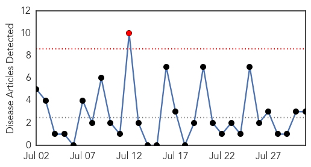
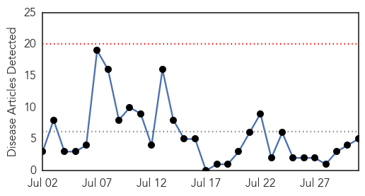
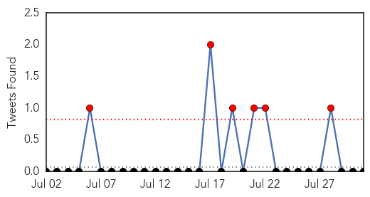
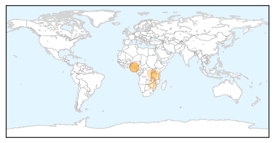

Swine Flu
30-Day Web Trend
1 alerts, 0 warnings

30-Day Twitter Trend
1 alerts, 0 warnings

Article Locations

Article Confidences

Top Articles:
Top Tweets:
- 0.666
- FluFactFriday: Most infections with H3N2v swine flu occur after prolonged contact with pigs. Learn more: http://t.co/wpnEcKx5rr
- 0.623
- RT: FluFactFriday: Most infections with H3N2v swine flu occur after prolonged contact with pigs. Learn more: http://t.co/wpnEcKx…
Cholera
30-Day Web Trend
0 alerts, 0 warnings

30-Day Twitter Trend
4 alerts, 0 warnings

Article Locations
Article Confidences

Top Articles:
- 0.949
- Delta Community Ravaged By Cholera
- 0.930
- No Cholera Outbreak In Delta, Says Govt
- 0.867
- More than 130,000 Burundian and Congolese refugees in Tanzania vaccinated against cholera
- 0.845
- Tanzania: 130,000 people receive cholera vaccination in overcrowded refugee camp
- 0.738
- Water shortages: Light at the end of the tunnel for Harare residents
Top Tweets:
- 0.627
- Work Together. Stop Transmission. End Deaths. Oral Cholera Vaccine Find out more @ https://t.co/IIdNzUQasq